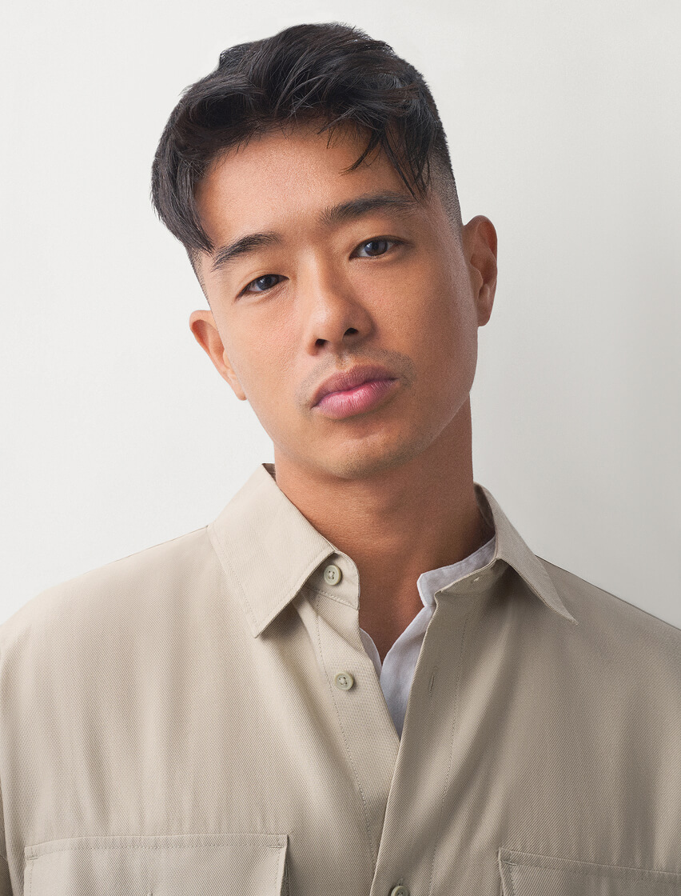
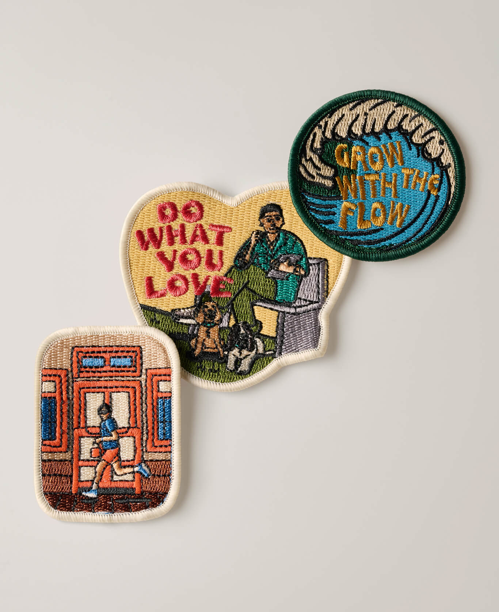

On the Move with
the Jones Backpack
On the Move with
the Jones Backpack
@kennethsbw
Illustrator
PEDRO x Kenneth
On the Move with
the Jones Backpack
On the Move with
the Jones Backpack
The things we collect while travelling often become lasting reminders of where we have been and who we have met along the way. The Jones Backpack continues through a series of collaborations with creatives from across the region, each interpreting the places, people, and experiences that have shaped their perspective into collectible patches designed to be carried forward. In collaboration with visual artist Kenneth Seow, this chapter highlights a creative process shaped by details that often go unseen.
The things we collect while travelling often become lasting reminders of where we have been and who we have met along the way. The Jones Backpack continues through a series of collaborations with creatives from across the region, each interpreting the places, people, and experiences that have shaped their perspective into collectible patches designed to be carried forward. In collaboration with visual artist Kenneth Seow, this chapter highlights a creative process shaped by details that often go unseen.

“I draw a lot of inspiration from nature, from light, movement, and the simple act of watching the world go by. Even in a fast paced city like Singapore, these quiet moments remind me to appreciate the small things.”
“I draw a lot of inspiration from nature, from light, movement, and the simple act of watching the world go by. Even in a fast paced city like Singapore, these quiet moments remind me to appreciate the small things.”
Drawing from his regular runs through the historic neighbourhood of Joo Chiat, Kenneth transforms fragments of his daily route into a series of collectible patches. Familiar sights, textures, and passing moments are distilled into graphic form, capturing the places he moves through every day and inviting new stories to accumulate over time.
Drawing from his regular runs through the historic neighbourhood of Joo Chiat, Kenneth transforms fragments of his daily route into a series of collectible patches. Familiar sights, textures, and passing moments are distilled into graphic form, capturing the places he moves through every day and inviting new stories to accumulate over time.
My inspiration comes from the things I genuinely love doing. I enjoy being out at sea and surfing because it gives me a sense of peace and joy. I also find inspiration in working out, in slowing down, and in taking time to simply be present with my thoughts. Even spending time with my dogs or embracing quiet moments in everyday life influences my work.
Through my illustrations, I hope to share a simple message. Growth is never linear. We are all evolving at our own pace, even when it does not feel obvious. My journey into illustration has been driven by passion and I want my work to bring a sense of joy and reassurance to others who may be navigating their own paths.
For me, fitness and illustration are deeply connected. Both are forms of self expression. I mainly practise calisthenics, which involves movements like handstands and different variations on the pull up bar. There is a sense of play and experimentation in training that mirrors how I approach my art.
Working out also helps me clear my mind. When I get into the zone, it allows my thoughts to reset and that is often when creative ideas surface. Many of my illustration concepts have come from these moments of movement and flow. In that way, fitness does not just influence my aesthetic. It shapes how I think and create.

Inspiration images courtesy of @kennethsbw
One of my favourite reminders in life to keep learning, keep growing, but stay flexible enough to let things unfold naturally. Just like water, we move with the currents, adapting, shifting, and finding our own rhythm. And just like a wave, every swell is shaped by flow. Trust it, ride it, grow with it.
East Coast Park is a place I often return to when I need a reset. There are pockets of calm where you can sit, observe, and simply let your mind slow down. Being close to nature helps me reconnect with my thoughts and emotions, which is essential for my creative process.
I draw a lot of inspiration from nature, from light, movement, and the simple act of watching the world go by. Even in a fast paced city like Singapore, these quiet moments remind me to appreciate the small things.
A philosophy I resonate with is grow with the flow. Everyone’s journey is different and there is no single path that defines success or growth. I have taken this mindset into my illustration practice by learning as I go, staying open to advice, and trusting the process. It reminds me to be patient with myself and to embrace change as part of the creative journey.
My non negotiables are my iPad mini and my sunglasses. The iPad mini is compact enough to carry everywhere, which allows me to sketch ideas the moment inspiration strikes. My prescription sunglasses are equally important because I spend a lot of time outdoors. They help me stay comfortable, focused, and ready to create wherever I am.
I would want them to know that the creative scene in Singapore is far more vibrant than people often realise. Choosing a creative path here can feel unconventional, but there are many talented individuals expressing themselves in meaningful and inspiring ways.
More than anything, I hope it encourages people to pursue what they love. We only have one life and it is never too late to start creating or exploring something new.
From their world to yours.
Markers of a journey waiting to unfold.
From their world to yours.
Markers of a journey waiting to unfold.